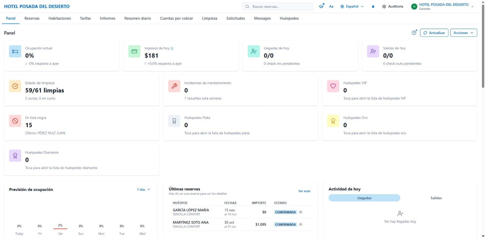

1
El Panel principal
Es la primera pantalla al entrar (pestaña Panel).

- 1Pestaña Panel: haz clic aquí para volver a esta pantalla desde cualquier parte de FrontDesko.
- 2Tarjetas del día: ocupación, ingresos, llegadas, salidas, limpieza, mantenimiento y huéspedes especiales, de un vistazo. Las verás en detalle en el siguiente tema, Leer el Panel.
En tu turno: al empezar, mira estas tarjetas. En 10 segundos sabes cuánta gente llega, cuánta se va y si hay habitaciones por limpiar.